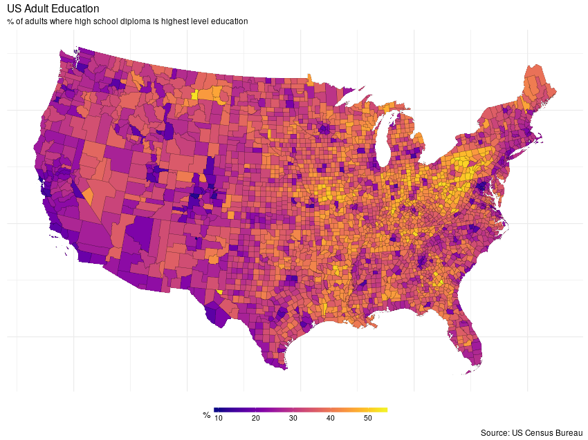
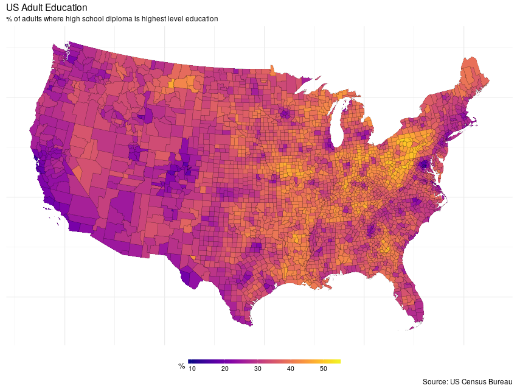
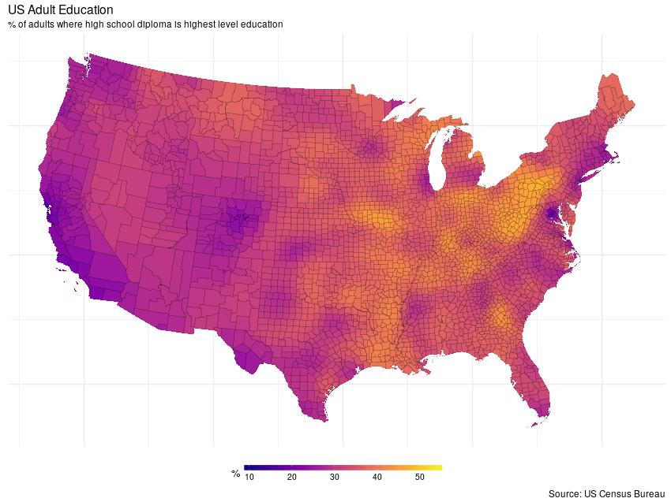
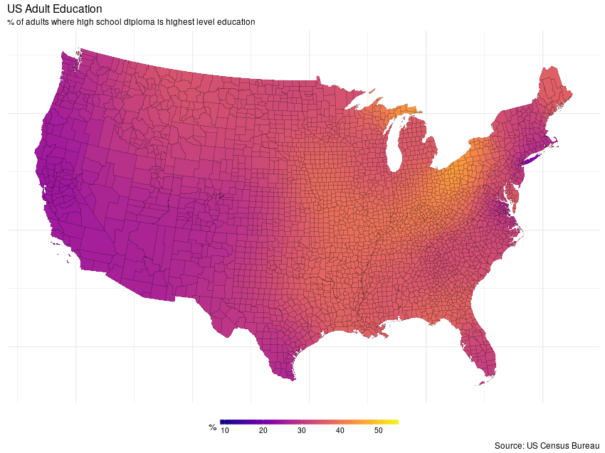

First steps with MRF smooths
One of the specialist smoother types in the mgcv package is the Markov Random Field (MRF) smooth. This smoother essentially allows you to model spatial data with an intrinsic Gaussian Markov random field (GMRF). GRMFs are often used for spatial data measured over discrete spatial regions. MRFs are quite flexible as you can think about them as representing an undirected graph whose nodes are your samples and the connections between the nodes are specified via a neighbourhood structure. I’ve become interested in using these MRF smooths to include information about relationships between species. However, these smooths are not widely documented in the smoothing literature so working out how best to use them to do what we want has been a little tricky once you move beyond the typical spatial examples. As a result I’ve been fiddling with these smooths, fitting them to some spatial data I came across in a tutorial Regional Smoothing in R from The Pudding. In this post I take a quick look at how to use the MRF smooth in mgcv to model a discrete spatial data set from the US Census Bureau.
In that tutorial, the example data are taken from the US Census Bureau via a shapefile prepared by the author. After a little munging — quite a few steps are missing from the tutorial — I managed to get data from the shapefile that matched what was used in the tutorial. The data are on county level percentages of US adults whose highest level of education attainment is a high school diploma. The raw data are shown in the figure below

To follow along, you’ll need to download the example shapefile provided by the author of the post on The Pudding. The shapefile(s) are in a ZIP, which I extracted into the working directory; the code below assumes this.
This post will make use of the following set of package; load them now, as shown below, and install any that you may be missing
library('rgdal')
library('proj4')
library('spdep')
library('mgcv')
library('ggplot2')
library('dplyr')
library('viridis')Assuming you have extracted the shapefile, we load it into R using readOGR()
shp <- readOGR('.', 'us_county_hs_only')and do some data munging
## select only mainland US counties
states <- c(1,4:6, 8:13, 16:42, 44:51, 53:56)
shp <- shp[shp$STATEFP %in% sprintf('%02i', states), ]
df <- droplevels(as(shp, 'data.frame'))
## project data
aea.proj <- "+proj=aea +lat_1=29.5 +lat_2=45.5 +lat_0=37.5 +lon_0=-96"
shp <- spTransform(shp, CRS(aea.proj)) # project to Albers
shpf <- fortify(shp, region = 'GEOID')
## Need a proportion for fitting
df <- transform(df, hsd = hs_pct / 100)The shapefile contains US Census Bureau data for all US counties, including many that are far from the continental USA. The tutorial from The Pudding doesn’t go into how they removed, or how they drew a map without these additional counties. For our purposes they may cause complications when we try to model them using the MRF smooth. I’m sure the modelling approach can handle data like this, but as I wanted to achieve something that followed the tutorial I’ve removed everything not linked to the continental US landmass, including (I’m sorry!), Alaska and Hawaii — my ggplot and mapping skills aren’t yet good enough to move Alaska and Hawaii to the bottom left of such maps.
The data were projected using the Albers equal area projection and subsequently passed to the fortify() method from ggplot2 to get a version of the county polygons suitable for plotting with that package.
Finally, I created a new variable hsd which is just the variable hs_pct divided by 100. This creates a proportion that we’ll need for model fitting as you’ll see shortly.
Before we can model these data with gam(), we need to create the supporting information that gam() will use to create the MRF smooth penalty. The penalty matrix in an MRF smooth is based on the neighbourhood structure of the observations. There are three ways to pass this information to gam()
- as a list of polygons (not
SpatialPolygons, I believe) - as a list containing the neighbourhood structure, or
- the raw penalty matrix itself.
Options 1 and 3 aren’t easily doable as far I can see — gam() isn’t expecting the sort of object we created when we imported the shapefile and nobody want’s to build a penalty matrix by hand! Thankfully option 2, the neighbourhood structure is relatively easy to create. For that I use the poly2nb() function from the spdep package. This function takes a shapefile and works out which regions are neighbours of any other region by virtue of them sharing a border. To make sure everything matches up nicely in the way gam() wants this list, we specify that the region IDs should be the GEOIDs from the original data set (the GEOID uniquely identifies each county) and we have to set the names attribute on the neighbouthood list to match these unique IDs
nb <- poly2nb(shp, row.names = df$GEOID)
names(nb) <- attr(nb, "region.id")The result of the previous chunk is a list whose names map on to the levels of the GEOID factor. The values in each element of nb index the elements of nb that are neighbours of the current element
str(nb[1:6])
List of 6
$ 19107: int [1:6] 1417 1464 1632 2277 2278 2851
$ 19189: int [1:6] 551 1414 2151 2452 2846 2849
$ 20093: int [1:7] 5 557 1064 1142 1437 1441 2978
$ 20123: int [1:5] 1469 1565 2648 2966 2977
$ 20187: int [1:7] 3 554 1142 1441 1620 2142 2238
$ 21005: int [1:7] 582 583 953 954 1770 1861 2169
With that done we can now fit the GAM. Fitting this is going to take a wee while (over 3 hours for the full rank MRF, using 6 threads, on a reasonably powerful 3-year old workstation with dual 4-core Xeon processors). To specify an MRF smooth we use the bs argument to the s() function, setting it to bs = 'mrf'. The neighbourhood list is passed via the xt argument, which takes a list as a value; here we specify a component nb which takes our neighbourhood list nb. The final set-up variable to consider is whether to fit a full rank MRF, where a coefficient for each county will be estimated, or a reduced rank MRF, wherein the MRF is represented using fewer coefficients and counties are mapped to the smaller set of coefficients. The rank of the MRF smooth is set using the k argument. The default is to fit a full rank MRF, whilst setting k < NROW(data) will result ins a reduced-rank MRF being etimated.
The full rank MRF model is estimated using
ctrl <- gam.control(nthreads = 6) # use 6 parallel threads, reduce if fewer physical CPU cores
m1 <- gam(hsd ~ s(GEOID, bs = 'mrf', xt = list(nb = nb)), # define MRF smooth
data = df,
method = 'REML', # fast version of REML smoothness selection
control = ctrl,
family = betar()) # fit a beta regressionAs the response is a proportion, the fitted GAM uses the beta distribution as the conditional distribution of the response. The default link in the logit, just as it is in for the binomial distribution, and insures that fitted values on the scale of the linear predictor are mapped onto the allowed range for proportions of 0–1.
The final model uses in the region of 1700 effective degrees of freedom. This is the smoothness penalty at work; rather than 3108 individual coefficients, the smoothness invoked to try to arrange for neighbouring counties to have similar coefficients has shrunk away almost half of the complexity implied by the full rank MRF.
summary(m1)
Family: Beta regression(179.532)
Link function: logit
Formula:
hsd ~ s(GEOID, bs = "mrf", xt = list(nb = nb))
Parametric coefficients:
Estimate Std. Error z value Pr(>|z|)
(Intercept) -0.63806 0.00283 -225.5 <2e-16 ***
---
Signif. codes: 0 '***' 0.001 '**' 0.01 '*' 0.05 '.' 0.1 ' ' 1
Approximate significance of smooth terms:
edf Ref.df Chi.sq p-value
s(GEOID) 1732 3107 9382 <2e-16 ***
---
Signif. codes: 0 '***' 0.001 '**' 0.01 '*' 0.05 '.' 0.1 ' ' 1
R-sq.(adj) = 0.769 Deviance explained = 89.7%
-REML = -4544 Scale est. = 1 n = 3108
Whilst the penalty enforces smoothness, further smoothness can be enforced by fitting a reduced rank MRF. In the next code block I fit models with k = 300 and k = 30 respectively, which imply considerable smoothing relative to the full rank model.
## rank 300 MRF
m2 <- gam(hsd ~ s(GEOID, bs = 'mrf', k = 300, xt = list(nb = nb)),
data = df, method = 'REML', control = ctrl,
family = betar())
## rank 30 MRF
m3 <- gam(hsd ~ s(GEOID, bs = 'mrf', k = 30, xt = list(nb = nb)),
data = df, method = 'REML', control = ctrl,
family = betar())To visualise the different fits we need to generate predicted values on the response scale for each county and add this data to the county data df
df <- transform(df,
mrfFull = predict(m1, type = 'response'),
mrfRrank300 = predict(m2, type = 'response'),
mrfRrank30 = predict(m3, type = 'response'))Before we can plot these fitted values we need to merge df with the fortified shapefile
## merge data with fortified shapefile
mdata <- left_join(shpf, df, by = c('id' = 'GEOID'))
Warning: Column `id`/`GEOID` joining character vector and factor, coercing
into character vector
To facilitate plotting with ggplot2 I begin by creating some fixed plot components, like the theme, scale, and labels
theme_map <- function(...) {
theme_minimal() +
theme(...,
axis.line = element_blank(),
axis.text.x = element_blank(),
axis.text.y = element_blank(),
axis.ticks = element_blank(),
axis.title.x = element_blank(),
axis.title.y = element_blank(),
panel.border = element_blank())
}
myTheme <- theme_map(legend.position = 'bottom')
myScale <- scale_fill_viridis(name = '%', option = 'plasma',
limits = c(0.1, 0.55),
labels = function(x) x * 100,
guide = guide_colorbar(direction = "horizontal",
barheight = unit(2, units = "mm"),
barwidth = unit(75, units = "mm"),
title.position = 'left',
title.hjust = 0.5,
label.hjust = 0.5))
myLabs <- labs(x = NULL, y = NULL, title = 'US Adult Education',
subtitle = '% of adults where high school diploma is highest level education',
caption = 'Source: US Census Bureau')I took many of these settings from Timo Grossenbacher’s excellent post on mapping regional demographic data in Switzerland.
Now we can plot the fitted proportions. Note that whilst we plot proportions, the colour bar labels are in percentages in keeping with the original data (see the definition for my_scale to see how this was achieved).
Fitted values from the full rank MRF are shown below
ggplot(mdata, aes(x = long, y = lat, group = group)) +
geom_polygon(aes(fill = mrfFull)) +
geom_path(col = 'black', alpha = 0.5, size = 0.1) +
coord_equal() +
myTheme + myScale + myLabs
This model expains about 90% of the deviance in the original data. Whilst some smoothing is evident, the fitted values show a considerable about of non-spatial variation. This is most likely due to not including important covariates, such as country average income, which might explain some of the finer scale structure; neighbouring counties with quite different proportions. A more considered analysis would include these and other relevant predictors alongside the MRF.
Smoother surfaces can be achieved via the reduced rank MRFs. First the rank 300 MRF
ggplot(mdata, aes(x = long, y = lat, group = group)) +
geom_polygon(aes(fill = mrfRrank300)) +
geom_path(col = 'black', alpha = 0.5, size = 0.1) +
coord_equal() +
myTheme + myScale + myLabs
and next the rank 30 MRF
ggplot(mdata, aes(x = long, y = lat, group = group)) +
geom_polygon(aes(fill = mrfRrank30)) +
geom_path(col = 'black', alpha = 0.5, size = 0.1) +
coord_equal() +
myTheme + myScale + myLabs
As can be clearly seen from the plots, the degree of smoothness can be controlled effectively via the k argument.
In a future post I’ll take a closer look at using MRFs alongside other covariates as part of a model complex spatial modeling exercise.